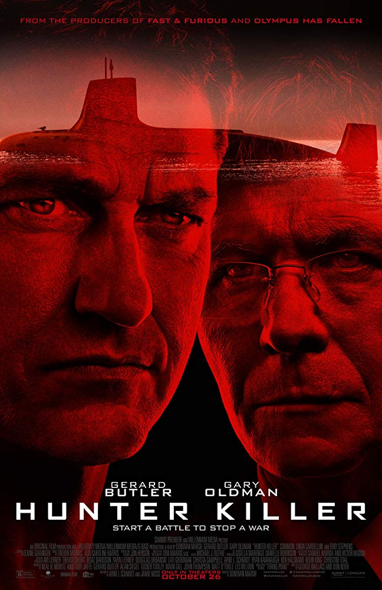
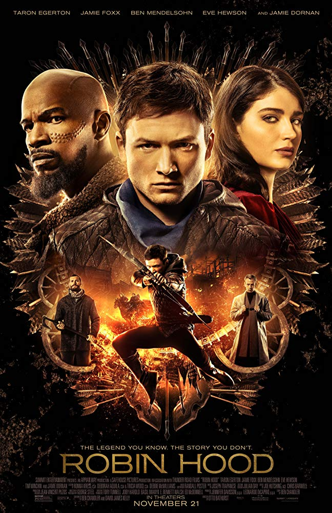
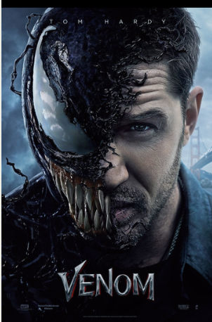

HOME
Hunter Killer

- Genre : Action , Thriller
- Release date : 18 November 2018 (Russia)
- Language : English
- Country of Origin : UK , USA , China
Some description about movie :
Hunter Killer is a 2018 American action thriller film directed by Donovan Marsh, written by Arne Schmidt and Jamie Moss, and based on the 2012 novel Firing Point by Don Keith and George Wallace. The film stars Gerard Butler, Gary Oldman, Michael Nyqvist (in one of his final film roles), Common, Linda Cardellini and Toby Stephens, and follows a group of Navy SEALs who rescue the captured Russian President from a coup.
Hunter Killer was released in the United States on October 26, 2018, by Summit Entertainment. It has grossed $29 million worldwide and received mixed reviews from critics, who saw it as "an undemanding, by-the-numbers actioner".
Robin Hood

- Genre : Action, Adventure , Thriller
- Release date : 29 November 2018
- Language : English
- Country of Origin : USA
Some description about movie :
Robin of Loxley (Taron Egerton) a war-hardened Crusader and his Moorish commander (Jamie Foxx) mount an audacious revolt against the corrupt English crown in a thrilling action-adventure packed with gritty battlefield exploits, mind-blowing fight choreography, and a timeless romance.
Venom

- Genre : Action , Sci-Fi
- Release date : 5 October 2018
- Language : English
- Country of Origin : USA , China
- Some description about movie :
Venom is a 2018 American superhero film based on the Marvel Comics character of the same name, produced by Columbia Pictures in association with
Marvel and Tencent Pictures. Distributed by Sony Pictures Releasing, it is the first film in Sony's Marvel
Universe, adjunct to the Marvel Cinematic Universe .
Directed by Ruben Fleischer from a screenplay by Scott Rosenberg, Jeff Pinkner, and Kelly Marcel, it stars Tom Hardy as Eddie Brock /
Venom, alongside Michelle Williams, Riz Ahmed, Scott Haze, and Reid Scott. In Venom, journalist Brock gains superpowers after being
bound to an alien symbiote whose species plans to invade Earth.